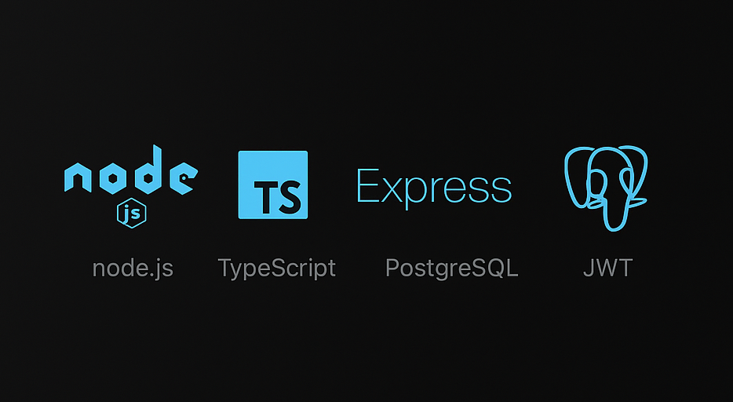
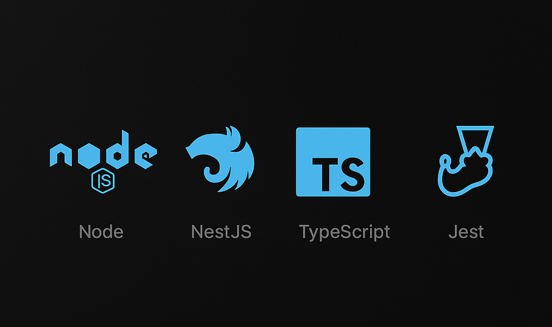
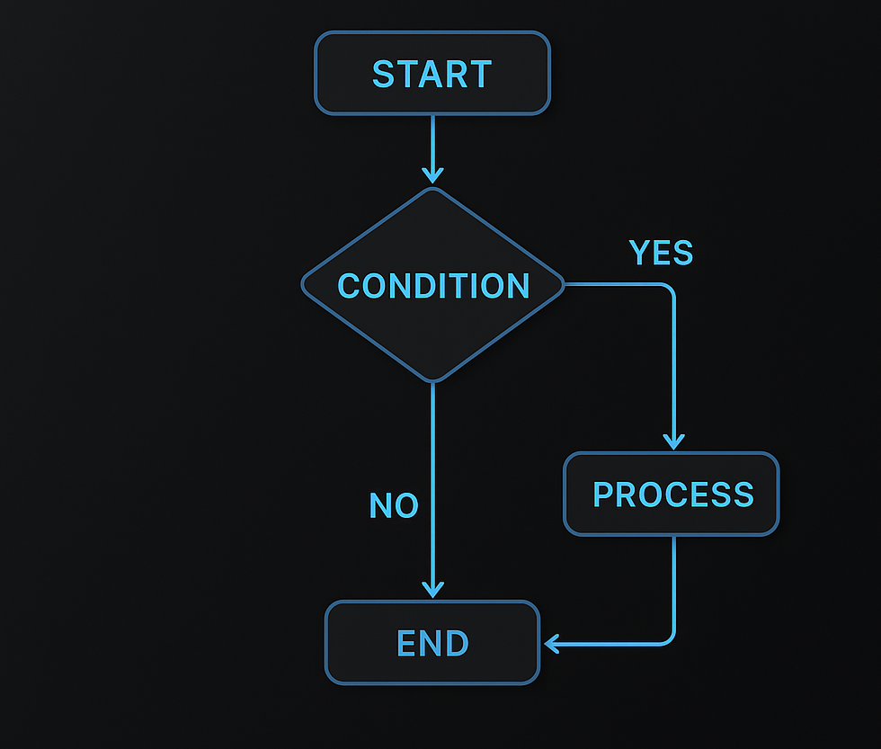
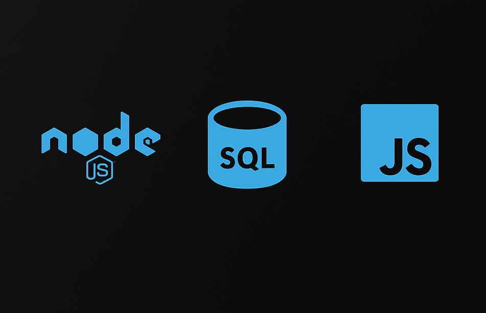
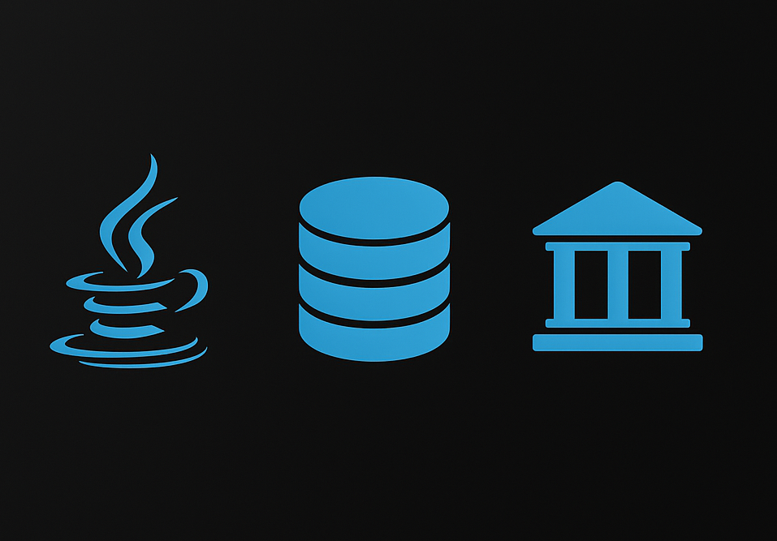
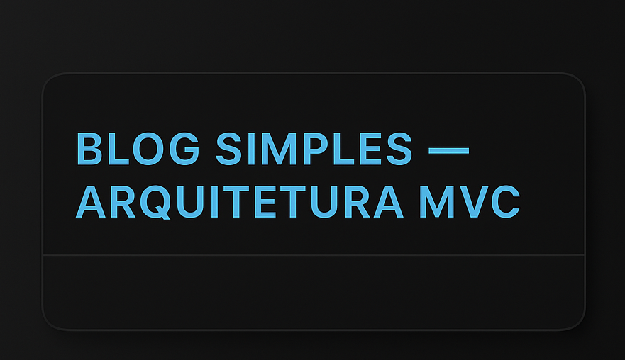

Sobre mim
Olá! Me chamo Thiago, tenho 20 anos e desde cedo desenvolvi interesse pela área de tecnologia. Sempre gostei de resolver problemas e entender como o computador funciona, especialmente no desenvolvimento de software. Comecei estudando lógica de programação e, com o tempo, aprimorei meus conhecimentos em tecnologias voltadas ao desenvolvimento back-end. Além disso, tenho grande interesse por algoritmos e estudo programação competitiva como hobby
Tecnologias
Soft Skills
Trabalho em Equipe
Criatividade
Comunicação
Pensamento Crítico
Experiências:
-
Pulse – Desenvolvedor Back-end (Bolsista)
mai/2025 – atual | São Luís/MA. Participei como um bolsista de Desenvolvedor Backend em um programa de formação profissional apoiado pela Pulse em parceria com a FAPEMA, EMAP, Grupo Mateus, SECTI e outras empresas de tecnologia de destaque.
Python Java ML trabalho em equipe -
Instituto ELOTEC – Professor De Programação
fev/2025 – atual | São Luís/MA. Ensino de algoritmos, Python, Java , JavaScript, bancos de dados e desenvolvimento web. Criação de materiais didáticos, orientação de portfólios e participação em projetos internos.
algoritmos Python Java JavaScript PostgreSQL banco de dados POO git/github -
MimosPet – Desenvolvedor Full Stack
mai/2023 – set/2023 | Remoto. Desenvolvimento de e-commerce com Node.js, APIs REST, templates responsivos e otimização de performance.
Node.js API REST HTML/CSS JavaScript PostgreSQL -
Datacontrol – Estagiário de TI
jan/2022 – jun/2022 | São Luís/MA. Suporte técnico, automação de planilhas e otimização de processos internos.
Excel VBA Automação TI Suporte
Formação Acadêmica
-
Bacharelado em Ciência da Computação
Universidade Federal do Maranhão — 2024-2028
publicacoes
17/08/2025
Monitoramento do Sistema com Python
Já pensou em acompanhar uso de CPU, memória e processos ativos
diretamente em seus projetos Python?
Nesse artigo mostro como utilizar a biblioteca psutil para criar um monitor de recursos eficiente.
17/08/2025
Manipulação de Dados com Pandas
Demonstro como utilizar a biblioteca Pandas para tratamento e transformação de dados, desde operações básicas até ações mais avançadas como filtragem, agregação e junção de dados, aplicáveis em APIs e sistemas backend.
12/07/2025
Introdução ao SQL e Modelagem de Dados
Uma visão prática sobre consultas em SQL, modelagem de tabelas e boas práticas para trabalhar com bancos relacionais em projetos de software.
🔗 Leia o artigo completo28/06/2025
Autenticação JWT em Aplicações Web
Explico o funcionamento do JWT (JSON Web Token) e mostro como implementar autenticação segura em aplicações web com Python.
🔗 Leia o artigo completo10/06/2025
Boas Práticas no Desenvolvimento Backend
Neste artigo trago dicas práticas sobre organização de código, versionamento de APIs e padrões que ajudam a manter um backend escalável e de fácil manutenção.
🔗 Leia o artigo completoProjetos:
-

Caixa de Pandora
Sistema backend seguro para armazenamento de dados sensíveis que se autodestroem após o tempo ou número de acessos definidos. Ideal para senhas temporárias, provas e mensagens privadas.
tecnologias: Node.js, TypeScript, Express, PostgreSQL, JWT
link para projeto -

Vendas Online — Backend
Repositório backend para um sistema de vendas online, desenvolvido com o framework NestJS em Node.js e TypeScript, garantindo escalabilidade e eficiência no lado do servidor.
Recursos: configuração de controllers (como criação de usuários), testes unitários e de integração, além de suporte para desenvolvimento em diferentes modos (dev, watch e produção). O projeto segue boas práticas de organização e qualidade de código com ESLint e Prettier.
Propósito: servir como base sólida para aplicações de vendas online, explorando a arquitetura modular do NestJS e demonstrando como estruturar uma API escalável e testável.
Tecnologias: Node.js, NestJS, TypeScript, Jest
link para o projeto -

Algorithms and Data Structures
Repositório com algoritmos fundamentais e avançados, além de estruturas de dados chave, implementados em várias linguagens.
Conteúdo: QuickSort, MergeSort, HeapSort, Binary Search, DFS, Arrays, Listas Ligadas, Pilhas, Filas, Árvores, Grafos, Tabelas Hash, Programação Dinâmica.
Tecnologias: Python, JavaScript, TypeScript
link para o projeto -

API User Management — Sequelize & MySQL
API desenvolvida para gerenciamento de usuários, implementando operações de CRUD (Create, Read, Update, Delete) com o ORM Sequelize e banco de dados MySQL.
Recursos: organização em camadas (models, views e configuração de banco), integração com Sequelize para mapear entidades e consultas, além de endpoints REST para manipulação de dados de usuários.
Propósito: demonstrar como construir uma API estruturada utilizando ORM, conectando o Node.js a bancos relacionais de forma prática e eficiente.
Tecnologias: Node.js, Express, Sequelize, MySQL
link para o projeto -

Conta Bancária — Java
Projeto simples em Java que simula uma conta bancária, permitindo operações básicas como criação de conta, consulta de saldo e manipulação de dados financeiros.
Recursos: classes organizadas para representar a conta bancária (ContaBancaria, ContaCorrente) e um programa principal para executar operações como depósitos, saques e consulta de saldo.
Propósito: exercitar os conceitos de Programação Orientada a Objetos em Java, como encapsulamento, métodos e interação entre classes.
Tecnologias: Java
link para o projeto -
.png) Algoritmo Preditivo com Prophet
Algoritmo Preditivo com Prophet
Ferramenta de previsão de séries temporais com Python e Prophet, aplicável em análise de vendas e demanda.
tecnologias: python,pandas,sklearn, matplotlib
link para o projeto -
 Maior Comunidade Conectada Heurística
Maior Comunidade Conectada Heurística
Projeto de análise e otimização de redes usando heurísticas, focado em conectividade.
tecnologias: C
link para o projeto -
APIS-PLAYLIST
API RESTful em Node.js e Express para gerenciar playlists de música, com autenticação e autorização via JWT.
tecnologias: Node.js, Express, JWT, Postman
ver projeto -

Blog Simples — Arquitetura MVC
Aplicação web construída em Node.js e Express que segue o padrão MVC (Model–View–Controller), separando responsabilidades em models, views e controllers.
Recursos: criar, visualizar e excluir postagens de blog por meio de uma interface simples e intuitiva. Os Models lidam com a lógica de dados e o banco; as Views renderizam a interface; os Controllers processam entradas do usuário e fazem a ponte entre model e view.
Propósito: demonstrar na prática como o padrão MVC organiza o código e facilita a escalabilidade, tornando clara a interação entre as camadas.
Tecnologias: Node.js, Express, JavaScript, HTML, CSS
link para o projeto